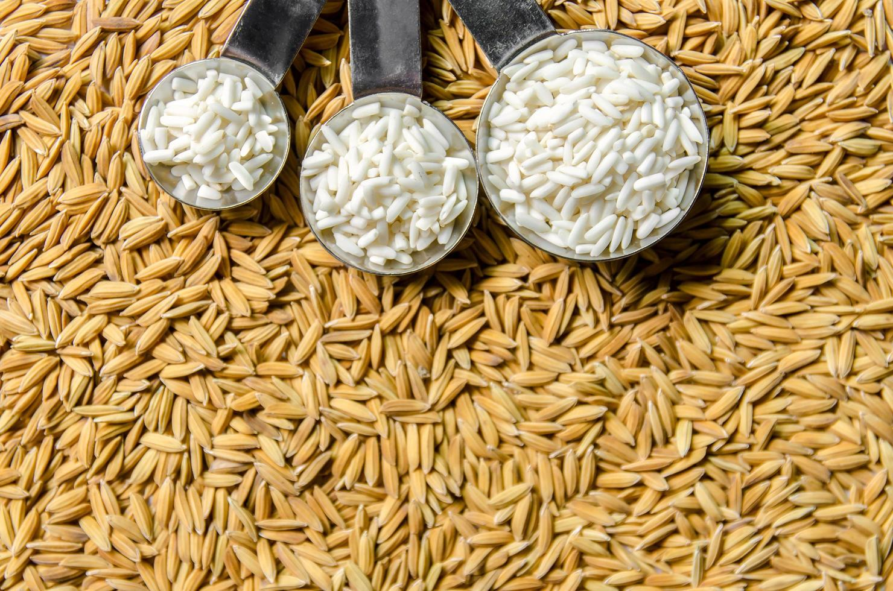

Disponible
Riziculture Touba
Riz Paddy WITA-9
Variété améliorée à haut rendement, grains longs et translucides. Idéal pour transformation industrielle.
- Conditionnement : Sac de 50kg
- Humidité : < 14%
- Disponibilité : Saison sèche (janv-mai)